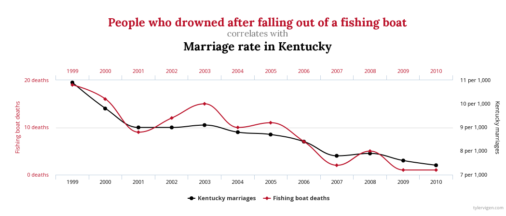
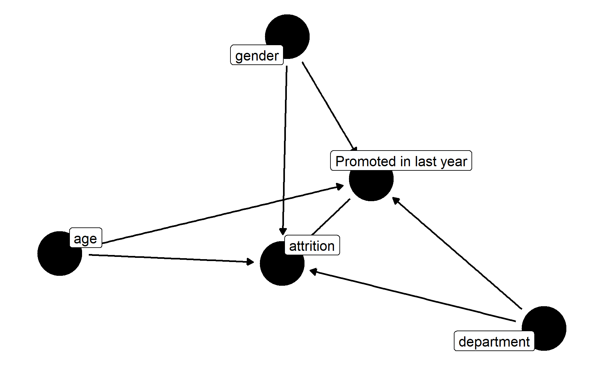
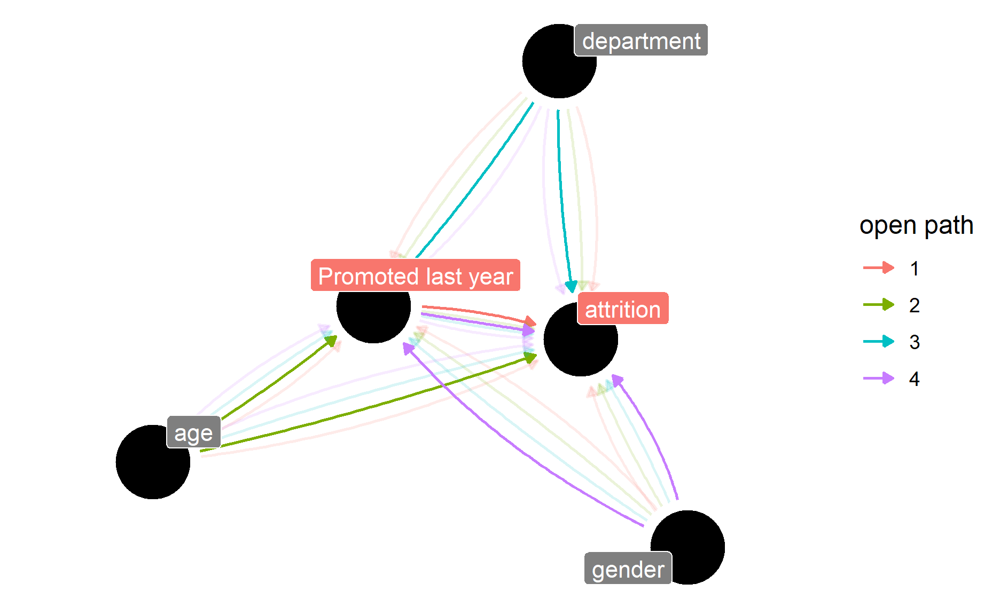
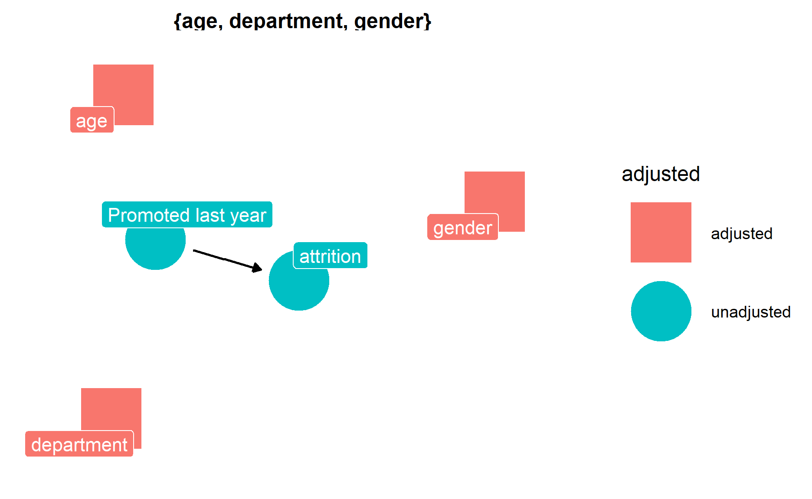

Recently I was reading about causal inference, it made me want to find out more about why we do causal inference and how to do the modelling.
Photo by Image Hunter
What is causal inference?
Causal inference is the term used for the process of determining whether an observed association truly reflects a cause-and-effect relationship (ScienceDirect).
Why do we use causal inference?
When I was doing my undergraduate study, my statistics professor always told us in class, “Association does not imply causation”.
For example, by taking the chart below, does that mean that people drowned after falling out of a fishing boat caused a drop in the marriage rate in Kentucky?

Taken from this website
Hence, blindly accepting the results without any understanding might lead us to the wrong conclusion.
According to the authors, following are the steps when performing causal analysis (Barrett, McGowan, and Gerke 2023a):
Specify a causal question
Draw our assumptions using a causal diagram
Model our assumptions
Diagnose our models
Estimate the causal effect
Conduct sensitivity analysis on the effect estimate
In this post, we will be focusing on how to draw a causal diagram.
What is a directed acyclic graph (DAG)?
Below are a few properties of a directed acyclic graph:
Edges are directed, i.e. single arrowhead
No feedback loop
I like this online resource as I felt the way how the author explained the DAG was rather easy to follow and understand.
Following are different ways the nodes can be connected within DAG (Barrett, McGowan, and Gerke 2023b):

The authors also mentioned that in practice, we will first specify our causal question and use the relevant domain knowledge to draw out the causal graphs.
Back-door paths
Backdoor paths are the paths between factors that could potentially lead us to drawing spurious conclusions about the relationship between our exposure and outcome (Barrett, McGowan, and Gerke 2023b).
The authors also have an example of the differences in the results when we close and do not close the backdoor paths.
We will leave other causal terminology for future exploration.
Confounders
Another important concept to introduce is “confounders”.
Confounder is a common cause of exposure and outcome (Barrett, McGowan, and Gerke 2023c).
A propensity score is the probability of being in the exposure group, conditioned on observed covariates (Barrett, McGowan, and Gerke 2023c).
Assumptions for unbiased results
There are no unmeasured confounders
Every subject has a nonzero probability of receiving either exposure
Demonstration
In this post, I will be using ggdag package to draw the graph.
pacman::p_load(tidyverse, janitor, ggdag)Import Data
In this demonstration, I will be using a Kaggle dataset on the employee resignation dataset.
First, I will import the data into the environment.
df <- read_csv("https://raw.githubusercontent.com/jasperlok/my-blog/master/_posts/2022-03-12-marketbasket/data/general_data.csv") %>%
# drop the columns we don't need
dplyr::select(-c(EmployeeCount, StandardHours, EmployeeID)) %>%
clean_names() %>%
# impute the missing values with the mean values
mutate(
num_companies_worked = case_when(
is.na(num_companies_worked) ~ mean(num_companies_worked, na.rm = TRUE),
TRUE ~ num_companies_worked),
total_working_years = case_when(
is.na(total_working_years) ~ mean(total_working_years, na.rm = TRUE),
TRUE ~ total_working_years),
ind_promoted_in_last1Yr = if_else(years_since_last_promotion <= 1, "yes", "no"),
ind_promoted_in_last1Yr = as.factor(ind_promoted_in_last1Yr),
attrition = as.factor(attrition),
job_level = as.factor(job_level)
) %>%
droplevels()Note that there are missing values in the dataset. Hence I have imputed the missing values by using the mean for simplicity.
I also would like to find out whether the attrition rate would be lower if the person has been promoted in the past year.
If we were to calculate the attrition rate by whether the person was promoted in the last year, we would see somehow the attrition rate is higher for those who were promoted in the last year.
df %>%
group_by(ind_promoted_in_last1Yr, attrition) %>%
tally() %>%
group_by(ind_promoted_in_last1Yr) %>%
mutate(perc = n/sum(n))# A tibble: 4 x 4
# Groups: ind_promoted_in_last1Yr [2]
ind_promoted_in_last1Yr attrition n perc
<fct> <fct> <int> <dbl>
1 no No 1362 0.853
2 no Yes 234 0.147
3 yes No 2337 0.830
4 yes Yes 477 0.170If we were to fit a very simple logistic regression, it seems like being promoted last year does increase the attrition rate.
non_causal_fit <-
glm(attrition ~ ind_promoted_in_last1Yr
,data = df
,family = binomial())
summary(non_causal_fit)
Call:
glm(formula = attrition ~ ind_promoted_in_last1Yr, family = binomial(),
data = df)
Deviance Residuals:
Min 1Q Median 3Q Max
-0.6095 -0.6095 -0.6095 -0.5631 1.9596
Coefficients:
Estimate Std. Error z value Pr(>|z|)
(Intercept) -1.76139 0.07077 -24.891 <2e-16 ***
ind_promoted_in_last1Yryes 0.17228 0.08679 1.985 0.0471 *
---
Signif. codes: 0 '***' 0.001 '**' 0.01 '*' 0.05 '.' 0.1 ' ' 1
(Dispersion parameter for binomial family taken to be 1)
Null deviance: 3895.7 on 4409 degrees of freedom
Residual deviance: 3891.8 on 4408 degrees of freedom
AIC: 3895.8
Number of Fisher Scoring iterations: 4Nevertheless, let’s set up our assumptions on the causal relationship.
Graph
First, we will specify our assumptions within dagify function. Then, I will pass the dagitty object to ggdag function to visualize the graph.
To keep things simple, below is the proposed assumption:
Attrition rate is causally impacted by whether the individuals were being promoted in the last year, their age, gender, and the departments they belong to
Whether the individuals are being promoted is causally impacted by their age, gender and the departments they are from
dagify(
attrition ~ age + ind_promoted_in_last1Yr + gender + department,
ind_promoted_in_last1Yr ~ age + department + gender,
outcome = "attrition",
exposure = "ind_promoted_in_last1Yr",
labels = c(
ind_promoted_in_last1Yr = "Promoted in last year",
age = "age",
attrition = "attrition",
gender = "gender",
department = "department"
)
) %>%
ggdag(use_labels = "label", text = FALSE) +
theme_dag()
We could use ggdag_paths function to find the open paths between the exposure and outcome. This function will return all the possible open paths in separate charts.
dagify(
attrition ~ age + ind_promoted_in_last1Yr + gender + department,
ind_promoted_in_last1Yr ~ age + department + gender,
outcome = "attrition",
exposure = "ind_promoted_in_last1Yr",
labels = c(
ind_promoted_in_last1Yr = "Promoted last year",
age = "age",
attrition = "attrition",
gender = "gender",
department = "department"
)
) %>%
ggdag_paths(use_labels = "label", text = FALSE, shadow = TRUE) +
theme_dag()
The purpose of doing so is to identify the backdoor paths.
As mentioned in the earlier post, these backdoor paths could potentially lead us to draw spurious conclusions about the relationship between exposure and outcome.
We could use ggdag_paths_fan function to combine all the open paths into one single chart.
dagify(
attrition ~ age + ind_promoted_in_last1Yr + gender + department,
ind_promoted_in_last1Yr ~ age + department + gender,
outcome = "attrition",
exposure = "ind_promoted_in_last1Yr",
labels = c(
ind_promoted_in_last1Yr = "Promoted last year",
age = "age",
attrition = "attrition",
gender = "gender",
department = "department"
)
) %>%
ggdag_paths_fan(use_labels = "label", text = FALSE, shadow = TRUE) +
theme_dag()
ggdag_adjustment_set function will list down the factors we should be adjusted to close the backdoor paths.
dagify(
attrition ~ age + ind_promoted_in_last1Yr + gender + department,
ind_promoted_in_last1Yr ~ age + department + gender,
outcome = "attrition",
exposure = "ind_promoted_in_last1Yr",
labels = c(
ind_promoted_in_last1Yr = "Promoted last year",
age = "age",
attrition = "attrition",
gender = "gender",
department = "department"
)
) %>%
ggdag_adjustment_set(use_labels = "label", text = FALSE) +
theme_dag()
Conclusion
That’s all for the day!
Thanks for reading the post until the end.
Feel free to contact me through email or LinkedIn if you have any suggestions on future topics to share.
Refer to this link for the blog disclaimer.
Till next time, happy learning!

Photo by Delano Ramdas on Unsplash